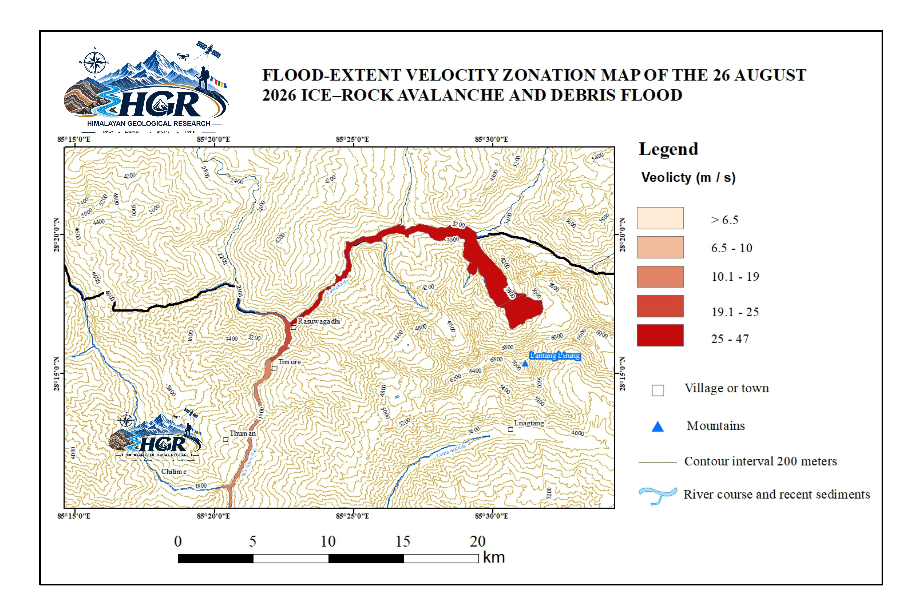
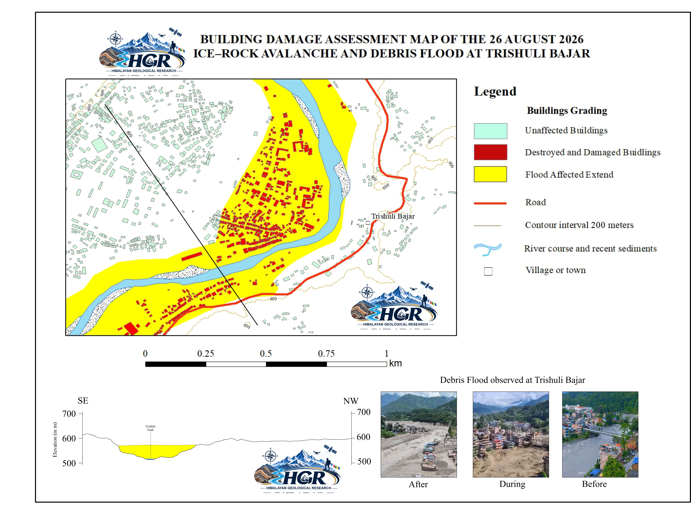

Scientific Investigation of the 26 August 2026 Rasuwa Ice–Rock Avalanche and Subsequent Flash Flood in the Nepal–China Transboundary Himalaya using Satellite Imagery, DEM Analysis, Seismic Evidence and Geospatial Methods
Event Overview
On 26 August 2026, at approximately 8:37 a.m., a major ice–rock avalanche occurred in the high Himalayan terrain of the Nepal–China transboundary region near the Langtang Lirung and Tsangbu Ri mountains in Rasuwa, Nepal. The event involved the catastrophic collapse of a large rock mass together with the overlying ice/glacier, generating a massive downslope movement. Following the initial failure, the displaced material entered the Lhende Khola, Bhote Koshi River, and Trishuli River, where it transformed into a highly channelized debris flow and flood. The flow propagated downstream along the Trishuli River corridor toward the Rasuwagadhi–Kerung area, resulting in extensive geomorphic changes, river-channel disturbance, sediment deposition, and impacts on infrastructure and transportation. The event represents a significant high-mountain cascading hazard in which an ice–rock avalanche evolved into a large downstream debris-flow and flood event with transboundary consequences.

Geological Overview
The study area lies within the tectonically active Himalayan orogenic belt along the Nepal–China transboundary region. The Higher Himalayan Crystalline overlies the Lesser Himalayan Sequence along the Main Central Thrust (MCT) zone south of the avalanche source area. The region comprises metamorphic and crystalline rocks, including gneiss, schist, quartzite, granitoids, and leucogranites, affected by intense deformation and fracturing. Steep, high-relief terrain and glacial processes further contribute to slope instability.

Volume Estimation of the Failed Mass
DEM differencing between the pre-event surface and the post-event DEMs acquired on 27 August 2026 and 8 September 2026 estimated a source volume of 152.11 million m³, comprising approximately 52.52 million m³ of ice and 99.59 million m³ of rock, corresponding to an ice-to-rock volumetric ratio of approximately 1:1.90. Assuming bulk densities of 900 kg/m³ for ice and 2,700 kg/m³ for rock, these volumes correspond to approximately 47.27 million tons of ice and 268.89 million tons of rock, respectively. The resulting total mass is approximately 316.16 million tons, with ice and rock contributing approximately 14.95% and 85.05% of the total mass, respectively.
The event initiated as a large ice–rock avalanche, involving the failure and rapid downslope movement of a mixed ice–roc mass. The avalanche impacted the valley system, where additional ice and surrounding material were incorporated into the moving mass. The estimated entrained ice volume is ~13.5 million m³. This stage represents the gravitational collapse, impact, and progressive entrainment associated with the avalanche.

The DEM-derived elevation-change map shows surface lowering across the delineated source area following the 2026 Rasuwa ice–rock avalanche. Elevation changes range from −350.97 to +0.99 m, with negative values dominating the source area and indicating substantial surface lowering. DEM differencing within the source-area polygon yielded an estimated 152.11 million m³ of negative volume change, representing the principal source-area surface-volume loss associated with the avalanche.

The map shows the spatial distribution of estimated flow velocity along the propagation path of the 26 August 2026 Rasuwa ice–rock avalanche and subsequent debris flood. The estimated velocities are classified into five zones, ranging from >6.5 to 47 m/s. Only a selected portion of the flow path is presented here to illustrate the spatial variation in velocity.The highest velocities (25–47 m/s) occur mainly along the upper and steeper sections of the flow path, where the avalanche/debris mass was rapidly channelized through confined terrain. The velocity generally decreases downstream; however, locally high velocities persist where the flow remains confined within steep and narrow valley sections. The map also illustrates the transition from the initial ice–rock avalanche into a channelized debris-flow/debris-flood system along the downstream river network.

The figures and photographs focus on Trishuli Bazar, where the downstream debris flood caused substantial loss of life and extensive damage to buildings and infrastructure. The map distinguishes unaffected, damaged, and destroyed buildings, together with the mapped extent of flood inundation. The lower cross-sectional profile illustrates the valley geometry and approximate debris-filled portion of the valley, while the accompanying photographs provide visual evidence of conditions before, during, and after the event. The impacts shown at Trishuli Bazar represent only one of several affected areas associated with the 26 August 2026 Rasuwa ice–rock avalanche and subsequent downstream debris-flood event. The event caused widespread destruction across multiple villages and settlements along the downstream flow path, resulting in substantial loss of life and extensive damage to buildings, infrastructure, and other critical facilities.
Discussion
The Rasuwa 2026 ice–rock avalanche represents a large high-mountain mass-movement event, with a preliminary estimated source volume of approximately 152.11 million m³. This volume comprises approximately 52.52 million m³ of ice and 99.59 million m³ of rock, corresponding to an ice-to-rock volumetric ratio of approximately 1:1.90. In terms of total source volume, the Rasuwa event is approximately 5.63 times larger than the reported 27 million m³ initial rock–ice volume of the 2021 Chamoli avalanche (Shugar et al., 2021). Compared with the reported 50–100 million m³ volume range of the Huascarán avalanche in Peru (Plafker et al., 1971), the Rasuwa source volume is approximately 1.52–3.04 times larger. These numerical comparisons should be interpreted with caution because the volume estimates were derived using different datasets, methods, and definitions of the failed mass.
The composition of the Rasuwa source mass is also important for understanding the behaviour of the avalanche. Rock accounts for approximately 65.5% of the estimated source volume, while ice constitutes approximately 34.5%. Following failure, the moving mass may interact with snow, sediment, and water, while steep topography and channel confinement can enhance mobility and promote downstream propagation. Thus, the resulting hazard is controlled not only by the initial failure volume and ice–rock composition, but also by entrainment, mass transformation, and channelized flow processes. The Rasuwa event therefore provides an important Himalayan example of how a large high-altitude ice–rock avalanche can evolve into a cascading downstream hazard extending well beyond its source area.
Conclusion
The 26 August 2026 Rasuwa ice–rock avalanche was a major high-mountain mass-movement event in the central Himalaya, involving the failure and downslope displacement of a very large volume of rock and glacier ice. Geometric reconstruction of the source area yielded volume of approximately 164 million m³, demonstrating the exceptional magnitude of the event. DEM differencing between the pre-event surface and the post-event DEMs acquired on 27 August and 8 September 2026 independently indicated approximately 152 million m³ of surface-volume loss within the delineated source area. The broadly consistent DEM-derived results from the two post-event dates indicate that most of the measurable source-area depletion occurred during the initial failure, with comparatively limited subsequent surface change within the investigated source area. The event further demonstrates how a large high-elevation ice–rock failure can evolve into a long-runout, channelized downstream hazard through the interaction and entrainment of rock, ice, snow, sediment, and water. The combination of high-resolution DEM analysis, geomorphological reconstruction, and remote-sensing observations provides a useful framework for quantifying large Himalayan ice–rock avalanches and assessing their cascading downstream impacts. The Rasuwa event therefore provides an important case study for improving understanding of high-mountain mass-movement processes and for future hazard assessment and monitoring in the Himalayan region.